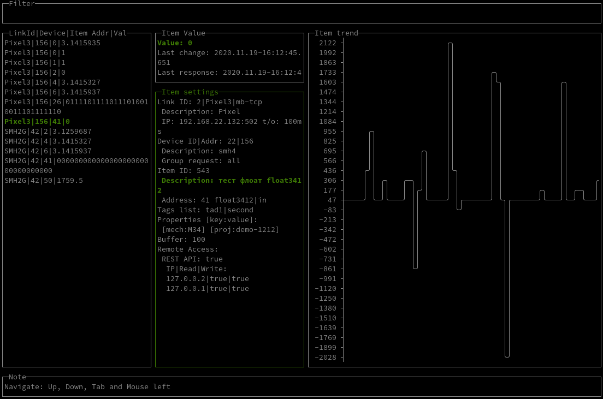
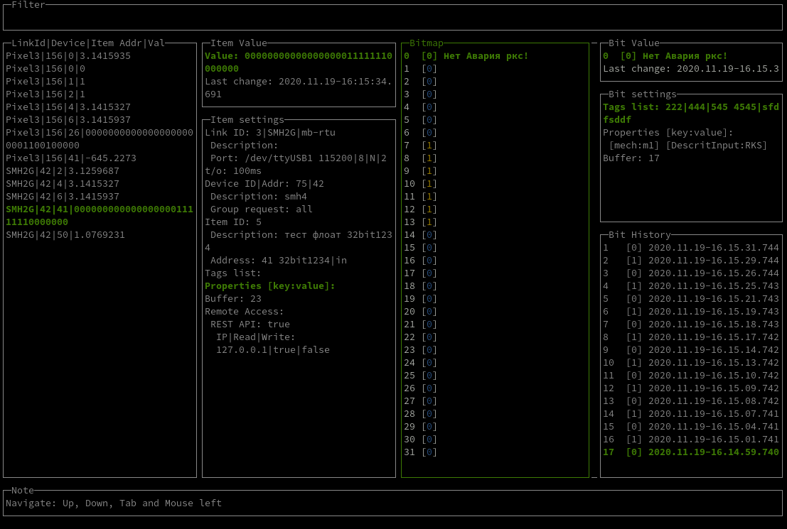

EasyMB - утилита для работы с modbus
Особенности
- Бесплатная
Утилита абсолютна бесплатная и не имеет ни каких ограничений для использования.
- Кроссплатформенная
Linux, Windows, ARM.
- JSON Конфигурация
Вся конфигурация содержится в удобно читаемом JSON файле(ах*).
-
Гибкий HTTP API Server
- API позволяющий получать и отправлять данные.
- Запрос данных по Тегам и Свойствам переменных.
- Запрос данных по сгруппированных Свойствам переменных.
- Разграничение доступ к переменным по IP.
- Обслуживание статических файлов.
- CORS.
- Буферизация данных
Позволяет хранить в памяти исторические данные с указанной глубиной.
- Поддержка множества типов данных
bool, int, uint, long, ulong, 16bit, 32bit с различной ориентацией байтов.
-
Режим тестирования переменных
Консольный интерфейс позволяющий определить корректность адреса и определить тип переменной.
-
Режим визуализации
Консольный интерфейс позволяющий визуализировать данные переменных и отследить динамику их изменения. 